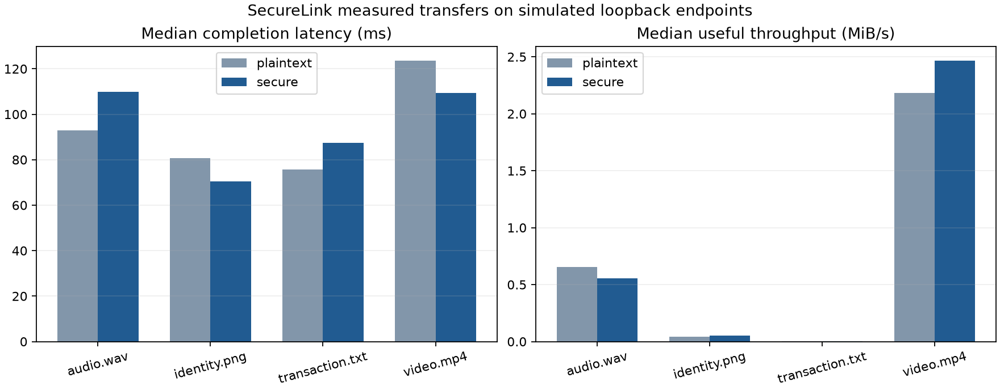

The regression run contains 68 tests, 0 failures or errors and 0 skips. The multimedia demonstration verified text, image, audio and video round trips. The efficiency experiment recorded 240 measured transfers; the supplied summaries report a successful-transfer rate of 100% for every tested mode and media combination.
These results describe the recorded controlled experiments. They are not universal security or availability guarantees.
| Requirement | Implemented evidence |
|---|---|
| Graphical application | Desktop launcher; responsive transfer, preview, audit and traffic-analysis frontend connected to the real backend |
| At least one approved module | Traffic Analysis plus PCAP-to-SQLite/XML |
| Two devices or simulation | Separate client, bank and witness processes on one Windows host |
| Text, image, audio and video | Valid files transferred both ways; hashes and decoded demo media verified |
| Five security goals | Authentication, AEAD, timestamp anti-replay, anchored auditing and bounded recovery |
| Security analysis | Adversarial tests for replay, tampering, identity, timestamp, audit, framing, quotas and recovery |
| Efficiency analysis | Thirty observations per media/mode with actual acknowledged transfers |
The application uses a loopback-only browser frontend with a Python controller. Its local simulation launches distinct server and witness processes and performs the existing encrypted transfers. The graphical workflow supports sending all four media types, verified receiving and browser playback, retained transfer history, resume, independent audit verification and live stream-capture conversion. GUI integration tests cover unauthorized requests, cross-origin/host rejection, file validation, round trips, audit editing, retained transfers after service restart and failed remote authentication. See the application guide.
The real-Chrome acceptance run completed 6 uploads and 5 verified receives, decoded text/image/audio/video previews, checked export downloads and reloads, and confirmed a 390-pixel layout without page overflow. Browser script errors: 0. These checks use isolated state and synthetic media.
Three separate processes on one Windows host over loopback; not separate physical devices. Process IDs recorded for this run were client 25548, bank 25952 and witness 27420.
The current GUI adds real Ed25519 signatures over a domain-separated file manifest containing its SHA-256, name/media/size, authenticated device and request ID. The receiver pins the signing public key and rejects missing, corrupted, wrong-key or context-modified signatures. Signed manifests persist alongside transfer records. The client verifies the received manifest and complete file before offering previews or downloads. This is distinct from the existing HMAC handshake authentication.
The Crypto performance page shows actual AES-GCM encryption/decryption, SHA-256 file-read/hash and Ed25519 signing/verification timings in milliseconds, separately for client/server and upload/receive, with counts, processed bytes and failure counts. Client measurements include retries; server measurements cover the final connection up to its last response encoding and exclude that final acknowledgement encryption. Missing operations are explicitly not performed. Hash timing includes disk reads, and instrumentation affects observations. The recorded benchmark_v3 is the earlier unsigned-transfer experiment and is not retroactively relabelled as signature performance.
The Testing & results page executes the actual isolated pytest suite, displays test durations and pass/fail/skip outcomes, and maps coverage to the ISL requirements. Missing or skipped coverage stays incomplete. The latest real-browser acceptance run exercises these pages and confirms capture decoding through PyShark and Wireshark/TShark without a Python-decoder fallback. See the test plan, observed GUI crypto timings, and GUI test results.
The Transfer evidence screen combines full ISO 8601 UTC creation/upload/receive timestamps, persisted client activity and correlated server audit events, original and independently calculated received SHA-256 values, Ed25519 signature/public key and actual measured crypto operations. It exports selected evidence JSON and the complete local server audit JSONL. Client activity records are ordinary logs; server audit integrity is verified separately against the witness.
The ciphertext display samples at most 64 bytes from an actual successfully sent or verified received media record and includes its real GCM tag, nonce and authenticated public header. Sampling occurs outside cryptographic timing blocks. It does not expose plaintext or secret keys, invent historical samples, or replace PyShark/Wireshark analysis. UTC observations are wall-clock records, not trusted timestamp certificates or signed manifest fields.
Image measurements include dimensions, format/color mode, encoded byte size and bounded first-frame comparison after conversion to 8-bit RGBA. MSE 0 and infinite PSNR indicate identical decoded pixels; these measure transfer fidelity rather than encryption strength. Pixel comparisons above 4 million pixels or unsafe decoding are skipped with an explicit explanation, while complete-file SHA-256 verification still applies. Regression tests decrypt actual sampled ciphertext with controlled test keys, reject tampered samples and check measured pixel changes.
| File | Bytes | Verified round trip |
|---|---|---|
| transaction.txt | 90 | True |
| identity.png | 3767 | True |
| audio.wav | 64044 | True |
| video.mp4 | 283133 | True |
The proxy observed actual socket bytes and saved USER0 PCAP records. PyShark/TShark independently read the captures; SQLite and XML conversions matched the record counts. There are no synthetic IP/TCP headers in these files.
| Mode | Observed records | PyShark records | Known transaction marker visible |
|---|---|---|---|
| plaintext | 72 | 72 | True |
| secure | 76 | 76 | False |
The marker was the literal transaction field "amount_paise". Its visibility in the baseline and absence in the secured stream are supporting observations. Public metadata, lengths and timing remain visible. Compressed media can have high entropy without encryption. TCP retransmissions and network RTT cannot be measured from these stream records. Npcap was not installed for this run.
Cold connection per transfer; full upload through durable receiver ACK; one discarded warmup per mode/file; alternating order; identical chunking and audit policy.
| Media | Mode | Median ms | p95 ms | Useful MiB/s | CPU ms | Peak RSS MiB |
|---|---|---|---|---|---|---|
| audio.wav | plaintext | 93.02 | 124.85 | 0.6566 | 0.00 | 29.29 |
| audio.wav | secure | 109.89 | 139.29 | 0.5558 | 0.00 | 29.29 |
| identity.png | plaintext | 80.79 | 107.83 | 0.0445 | 0.00 | 29.07 |
| identity.png | secure | 70.54 | 124.19 | 0.0509 | 0.00 | 29.07 |
| transaction.txt | plaintext | 75.65 | 109.79 | 0.0011 | 0.00 | 28.94 |
| transaction.txt | secure | 87.53 | 110.83 | 0.0010 | 0.00 | 28.94 |
| video.mp4 | plaintext | 123.70 | 154.26 | 2.1828 | 0.00 | 29.41 |
| video.mp4 | secure | 109.38 | 154.98 | 2.4686 | 7.81 | 29.41 |

Observed overhead varies with payload size, storage scheduling, audit persistence and shared-host load. A single aggregate overhead percentage would conceal these differences.
Client, server and witness share one process and machine: CPU/RSS are aggregate, not per-device.
Windows process CPU time may be quantized; a zero measurement is below timer resolution, not zero computational work.
RSS sampled every 2ms; very short peaks may be missed.
Protocol byte count includes client-server handshake and application frames, excludes TCP/IP and separate witness traffic.
Baseline disables client-server authentication/encryption only, and is restricted to loopback.
Timing includes local hashing, disk persistence and audit anchoring; no claim of cryptography-only latency.
The test closed a connection after a transaction had committed but before the acknowledgement reached the client. The client re-authenticated and retried with the same request ID. The observed recovery took 237.30 ms with 1 reconnection. The ledger contained 1 transaction entry after a repeated submission. This is one controlled recovery observation; it is not a recovery-time service guarantee.
Tests reject exact encrypted-record replay, old-session records, expired handshake timestamps, ciphertext/header changes, wrong secrets, wrong server identity, duplicate JSON fields, oversized records, unsafe filenames, incorrect media signatures, mismatched file hashes and invalid chunk offsets. They verify upload/download recovery, durable state reconstruction, owner isolation, connection-limit recovery and service for a legitimate client while another peer stalls.
Audit tests modify, delete, truncate and recompute local log records, check witness rollback rejection, exercise concurrent writers and simulate witness unavailability. The protected checkpoint assumption is explicit: compromise of both bank and witness is outside the demonstrated guarantee.
Setup and commands · Protocol and threat model · Test results · Media and recovery results · Separate-process results · Raw benchmark observations
The original synopsis was retained unchanged. The revised synopsis describes the implemented version and its limits. Physical LAN replication and IP/TCP-level packet capture remain environment-dependent validation steps.